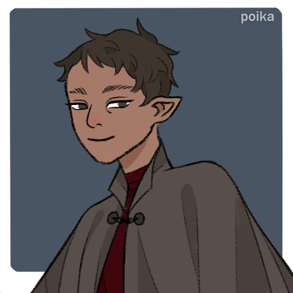

Iscin

Quick Bio¶
| Aliases | Iscin Irascu, Omra Irascu |
|---|---|
| Pronouns | She/They |
| Race | Elf |
| Class | Immolator |
| Age | 24-25 |
| Occupation | Seems to currently be a hired hand around Brookhaven. |
| Hometown | Halfglow |
| Drive | Act callously or recklessly about death |
Stats¶
| STR | 1 |
|---|---|
| DEX | -1 |
| INT | 0 |
| WIS | 1 |
| CHA | 2 |
Appearance¶
Iscin is a tall, brown-skinned elf with broad shoulders and a square jaw. They have dark hair that they clearly cropped short themselves and eyes the same color. They have burn scars across any visible portion of skin: up and over their jaw, at the lobes of their ears (they used to have pierced ears; metal and fire don't mix well), over their hands and wrists. They're almost always seen wearing a worn olive-brown cloak. They look just shy of friendly: they always have a smile, but it's more like they've realized something that you haven't yet learned.
Public History¶
Iscin is a kind young woman who came to Brookhaven some three or four years ago from up north. She doesn't make herself too close to anyone in particular, but she knows most people in town in passing, at least, and maybe a little bit better than they know her. She works in Brookhaven as a general helper, clearing snow with magic or offering a hand at local shops.
Their hometown's Sun seems to have gone out; they don't talk about it often, but they keep an ear out for news about other failed stokings. Apparently after their town went dark, they moved to a small cabin with their father, who has since passed.
They seem to show up any time there's interesting events, but they rarely stray far from the edges of the crowd.
History and Secrets¶
Iscin was born Omra Irascu to parents Ruvan and Unra in the small town of Halfglow, a ways north of Brookhaven. The name 'Iscin' actually belongs to her younger sister.
In Halfglow, her father worked as a farmer, priest, and scryer - most people had multiple jobs, but he was one of the few people locally who could help stoke their small Sun when it came time. Her mother fell ill and died when Omra was 7, and the actual Iscin was only 2, leaving their father as sole caretaker to the both of them.
When she was 12 (and her younger sister 7), the stoking for Halfglow's Sun failed. The town emptied out; there wasn't necessarily explicit blame placed on Ruvan, but there was certainly the sense that he had been at fault. One of the only things Iscin really knows about the situation is that it fell apart trying to coordinate the leylines. Maybe it was to do with the stress of his lost wife and taking care of two children.
After Halfglow was abandoned, their father took them south to a cabin he knew of, setting them up on their own. Omra then thought that maybe it was because no one would let them into their towns after hearing that her father had failed a Sun before. They worked the land themselves, hard work farming and gathering wood and foraging to stay alive, and made a half-decent living for themselves. Ruvan would go to the closest town to buy the necessities they couldn't make for themselves and Omra would stay behind to care for her sister.
Shortly after moving to the cabin, young Iscin started getting sick, a little like their mother had. It was slower to creep in but it left her frail and susceptible to the cold. Their days split between homesteading and caring for her, but Omra never blamed her for this; she loved her sister dearly, and though caring for her was hard, finding time to read to her and brush her hair were the bright points of Omra's day. (This is when Omra started really poring through her father's books - he had a lot of assorted religious and magical texts from his role as a priest. Some of them were a little more esoteric than others. Omra had already set religion aside out of bitterness, but they were interesting to read.)
When Omra was 16 and Iscin 11 their father left, to find wood or to visit the nearest town, and he did not come back when he should have. After a few days Omra bundled up against the cold to see if he was nearby, and she did find him, but as a frozen undead. He had died out in the snow and without anyone to find him had come back a monster. Omra was forced to kill him again, with nothing but her hands and the shovel she'd grabbed for protection. She told her sister that he must have gotten lost.
She cared for her sister, she cared for the cabin. When she had time to herself she read her father's books, especially the one that spoke about some old ritual to burn away death. Too many things had burnt out in her life, and the idea of starting a new fire that could never go out was appealing. Her sister got sicker. It began to frighten her that one day her sister might day, and it would happen when Omra wasn't looking, and she would turn out the way their father did.
She was 17, and Iscin was 12, when she finally acted out the ritual. Whatever she found in that book gave her access to fire, and the sacrifice she made in exchange was her sister's life. Omra told her before that it would be quick, and it wouldn't hurt, and it would be better, after all. She doesn't remember the moment of the burning completely but she thinks she remembers the look on her sister's face: open and frightened and grateful.
Of course the cabin burned too, leaving only half a husk of useless ash, so Omra took what she could (her father's cloak; her sister's ribbon; a leather bag and a sharp knife) and left. She also took her sister's name; Omra died in the fire, and to keep the memory of her sister she began going by Iscin.
She had gained some clarity in that fire. She had killed death. This was what was owed to her by the universe, the natural way of the things, finally shaping together to help her instead of hurt her. She had made a sacrifice that the forces of nature could not ignore, now, and it was - compared to dying - easy. It made sense to her now. And why should she keep that to herself? When she left her home she began to travel slowly south, stopping in towns and villages for a few months at a time, hovering on the edges of the people there, looking for someone who might listen. It would be selfish to keep this to herself. Someone else had to know this, the way to finally stop the frozen undead, the way to keep death away.
Iscin finally settled into Brookhaven a few years ago, at the age of maybe 20 or 21. She made a point to never get too close to anyone, because that was a dangerous decision, but she kept her eyes open, waiting for someone to pass through who might listen. Who may have the sway to show others what she had learned. In the meantime she's tried with a few adventurers here and there, looping closer in orbit towards them, but nothing's ever stuck.
Equipment¶
- 1 Wealth
- A bundle of torches (5 uses)
- Adventuring Gear (5 uses)
- Fire-resistant robes (Valuable, 1 Armor vs Fire)
- Supplies (3 Uses, Slow)
- Scorched Knife (Intimate)
Background¶
Heart of the Phoenix¶
You sacrificed your entire being, but were returned to life shortly afterwards with fire in your heart. You may have 'died' several times since then, but it doesn't seem to stick.
When you Crumble, replace 'Die' with 'Die for now, then return to life when everyone next Settles In.'
Starting Stats: +2 CHA, +1 STR Starting Equipment: Adventuring Gear (5 uses) Drive: Act callously or recklessly about death.
Moves¶
FIREBRAND¶
You can move and manipulate fire in a variety of ways - dimming, flaring, sparking, changing color, creating shapes and images, and more. Your fire is Distinctive, Fiery, and Near when you fight with it. Additionally, choose two traits for it: - Adaptable: Your fire has the Intimate and Close tags. - Restrained: You and nearby allies have +1 Armor against your fire and its effects.
UNLEASH FLAMES¶
When you fight using fire as a weapon, roll +CHA. On a 10+ you hurt your foe, but choose one. On a 7-9 you hurt your foe, but choose two. - You cause unintended collateral damage. - You suffer a condition, perhaps due to overexertion or a foe’s counterattack. - Choose and Burn one of your fire’s traits - Your draw unwanted attention from nearby
CAPTIVATE¶
When you share an intimate or enchanting moment with someone, usually with time and privacy, roll +CHA. On a 10+ you have 2 Charm over them. On a 7-9 you have 1 Charm over them. They can reduce your Charm over them by 1 by: - Giving you something they think you want. - Doing something you tell them to do. - Fighting to protect you. - Favoring you, but only if they don’t already. If they’re an NPC, they can’t act out against you while Charmed. If they’re a PC, you also can spend 1 Charm to inspire or distract them, granting them Advantage or Disadvantage on their next roll.
Advanced Moves¶
Twice as Bright, Half as Long¶
While channeling your fire, after rolling you may sacrifice something, material or immaterial but always notable, to treat a result of 6- as a 7-9, or a result of 7-9 as a 10+.